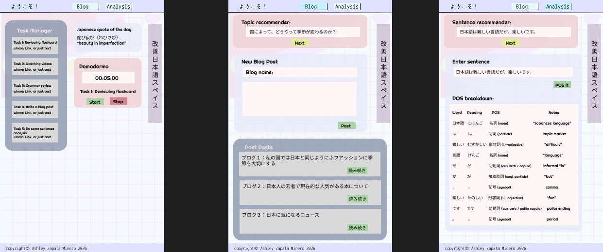

Language Task Manager
In this project, I would like to propose creating a task management system. I want to incorporate a checklist for users who are currently learning a language. I also wish to incorporate a bloging system, where I will use a database to suggest correct topics gotten from an API or dataset that will be randomized so user can always have a topic to expand on. I want to also incorporate word segmentation, as I think it will be helpful to people like me who want to see sentences decomposed to better understand how the language works behind the scenes. One of the motivating factors is while Japanese is a really fun language to learn, it is also really challenging as an English speaker, so having a space that motivates you to continue going forward despite the difficulty will prove useful to learners like me and to myself as well.
Japanese Language Learners
Data stored
Data Source
Design & Color Scheme:
My Design will contain a widget like impression. It will incorporate a mix of Japanese and English text. Furthermore it will contain a cotton candy theme/wonderland theme for the color scheme.
Color Palete
#8E9AAF
Moon Veil
#CBC0D3
Light Grey
#EFD3D7
Soft Blush
#DEE2FF
Simply Lavendar
#F5E5EF
Pastel Pink
#E5F8FC
Lightest Blue
#D9D9D9
Platinum
How many pages am I planning to have?
3 pages
What are the pages?
(The Task Section, The quote of the day section, The pomodormo section.)
(Suggested blog topic section, Create a new post section, Past blogs Section)
(Sentence recommender section, Enter a sentence with POS generation section)
(if single page) How many sections am I planning to have?
3 sections
What are the sections?
(The Task Section, The quote of the day section, The pomodormo section.)
(Suggested blog topic section, Create a new post section, Past blogs Section)
(Sentence recommender section, Enter a sentence with POS generation section)
